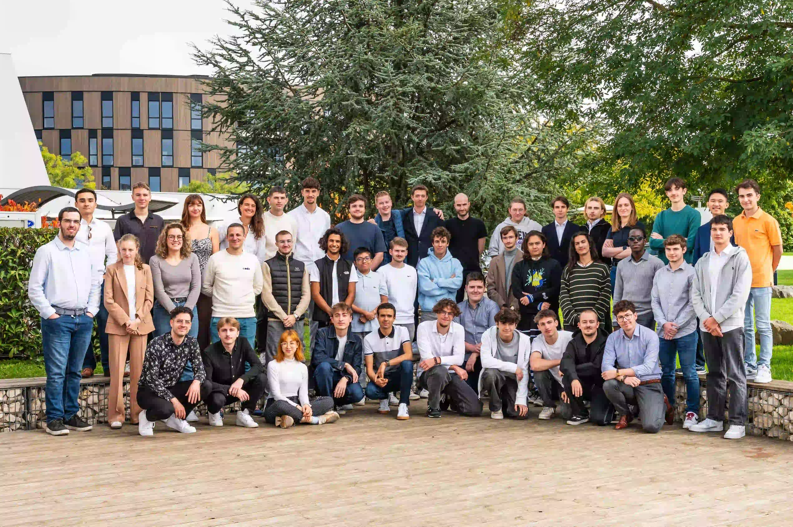

NUMERIQUE & DIGITAL - CODA A DIJON
Une nouvelle école à Dijon !
DIJON : CODA OUVRE CES PORTES A LA RENTREE 2025
L’école CODA s’installe à Dijon : une nouvelle ère pour la formation numérique en Bourgogne
Dans un monde où le numérique façonne l’avenir, l’école supérieure d’informatique CODA s’impose comme un acteur incontournable de la formation tech en France. Fondée en 2022 par Marin Vogler et Léni Maroglou, deux jeunes ingénieurs passionnés, CODA poursuit son expansion avec l’ouverture d’un campus flambant neuf à Dijon, au cœur de la Cité des Ducs.
CODA : une école tournée vers l’innovation
CODA propose des formations en développement informatique, notamment un Bachelor Développeur Full Stack avec possibilité d’alternance, ainsi que des parcours bac +5. L’école se distingue par son approche pédagogique axée sur la pratique, la collaboration et l’adaptabilité aux besoins du marché. Reconnue par l’État, elle vise à former les talents du numérique de demain dans des villes à taille humaine, avec l’ambition d’ouvrir dix campus en dix ans.
Le campus de Dijon : un écosystème tech au cœur de la ville
Inauguré officiellement le 9 octobre 2025, le campus dijonnais est situé au 4 boulevard Docteur Jean Veillet, dans les locaux partagés avec l’ESADD (École Supérieure d’Art et de Design Digital) et CCI Formation. Ce choix stratégique place CODA à proximité immédiate des transports en commun, des résidences étudiantes et des pôles économiques de la métropole.
Une première promotion prometteuse
Pour sa rentrée inaugurale, le campus de Dijon accueille 50 étudiants, encadrés par des intervenants issus du monde professionnel. Le parrain de cette première promotion n’est autre que Pierre-Henri Deballon, entrepreneur dijonnais et cofondateur de Weezevent, symbole du dynamisme local.
CODA Dijon : plus qu’une école, une communauté
Au-delà des cours, CODA encourage la vie étudiante et l’échange entre pairs. Des événements, ateliers, hackathons et journées portes ouvertes (prochaines dates : 6 novembre et 8 décembre) rythment la vie du campus. L’école mise sur l’humain autant que sur le code, en formant des professionnels capables de collaborer, communiquer et innover.
Des ambitions claires pour l'avenir
Avec son implantation à Dijon, CODA confirme sa volonté de rendre la formation numérique accessible dans des territoires dynamiques mais souvent sous-représentés dans le secteur tech. L’école ne se contente pas de transmettre des compétences techniques : elle prépare ses étudiants à devenir des acteurs du changement, capables de répondre aux défis du numérique dans des environnements variés. En misant sur l’excellence, la proximité et l’innovation, CODA trace une voie ambitieuse pour les talents de demain, en Bourgogne et au-delà. Ce modèle de développement territorial favorise l’émergence d’écosystèmes locaux, où les étudiants peuvent s’épanouir sans quitter leur région. CODA Dijon devient ainsi un catalyseur de compétences, de projets et d’opportunités pour toute la communauté numérique bourguignonne.